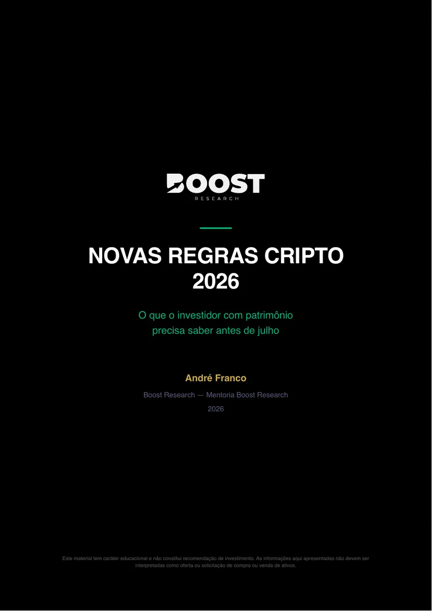

Flagship case · 01

Uma operação de aquisição full-funnel.
Paid media, landing pages, qualificação, CRM, automação e tracking server-side conectados para produtos financeiros de alto ticket.
856 leads · Mar/26IR Cripto · CPL R$11R$195k+ Meta Ads em 2026
Meu papel: Growth Strategy · Paid Media · Landing Pages · Tracking · CRM · Analytics · Creative Testing